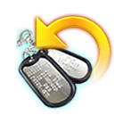
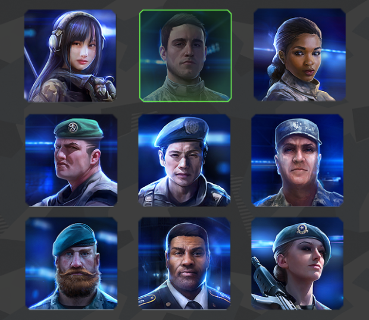
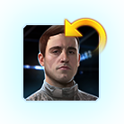

Your unique name and your avatar will be recognized with respect among your allies and feared by your enemies. You can customize them from the Account menu. To access it, from the main command interface, tap the More button in the lower left area. After which, select Account from the available options.
Customizing your Name
From the Account interface tap inside the text field under Player Name. After you enter your new name, simply tap Apply to confirm the change. Accepted names can contain only Numbers and Letters and it's length must be between 3 and 16 characters.
Remember, you'll will need to use a Change Name item. If you don't have any at the moment, you can always get one from the in-game store.
Customizing your Avatar
The Avatar is displayed on your public profile, in Leaderboards, chat posts and private messages that you send. To select your avatar of choice, from the Account interface select the Change button below your avatar. A list of all available avatars will appear.
When you see something you like, just press on it to select. If you wish to get out of the avatar selection simply press anywhere outside of the avatar panel.
Similarly to customizing your name, changing your avatar also requires a Change Avatar item.
Save Progress
Instant War supports all major platforms and you are able to save your progress on each one of them using their corresponding Gaming Services:
 Play Games
Play GamesAfter the tutorial section, simply tap the More button in the lower left area and select Account from the available options. Depending on the platform you play, the linking button will represent the available service for it. You should be logged on to the service in order for this to work. You need to do just a quick confirmation and your progress will be safely stored to the respective service credentials.
Once done, if you wish to make any changes over that link, you should contact our customer support (hyper link to Customer Support ticket) and they will help you out with any requests you may have.
Resume Progress
If you wish to continue your progress over another device from the same platform, first you'll have to log in with the same credentials for the service in question. The next step depends on whether or not the game been previously played on that device:
- If you haven't played before, download the game and start it. At this point its safe to simply skip the Tutorial and head to More - Account. Select the button that displays the corresponding service. The game will ask to confirm that there is progress linked with this service already and if you like to load it. Taping Yes will reload the game with your linked progress. NOTE: Doing this WILL permanently delete the new game you've started, regardless how long you've played it
- If you have played the game before and there is already another linked progress, go to More - Account and select New Game. After which follow the steps above to load your desired progress
Link your progress to other platforms
Your progress can also be playable on other supported platforms. There are several conditions to watch for, in order to Link your account on a different platform
- The progress you wish to use, must be already linked to the Gaming Service appropriate for the device in question (Game Center, Play Games or Microsoft Account)
- The new device should also be linked to it's corresponding Gaming Service with the HQ for that device, be below level 5 (You can always start a NEW game on the device you are transferring to so that the HQ level is below level 5).
Once all of the conditions above are met, tap the More button in the lower left area on the main command interface. Select Account from the available options and tap on the Transfer button. To transfer a progress that you already linked to 1 Gaming Service (for example Game Center on iOS platform), that you want to play on another platform, for example Android:
- After you tap on the Transfer button select "This is the OLD device". You will be given a code that you need to enter on your other device.
- Login to Instant War on your other Device. Go to More > Account > Transfer and select "This is the NEW device". Now Enter the code that was generated from the Old Device
Congratulations! You can now play your Progress on both devices.
NOTES:
- There can only be a single Gaming Service Link per one account. That means, you can't link multiple Game Center accounts to the same progress, or have multiple progresses linked to one Game Center
- If you link your progress to all supported Gaming Services and wish to make any changes, you should contact our customer support(hyper link to Customer Support ticket).